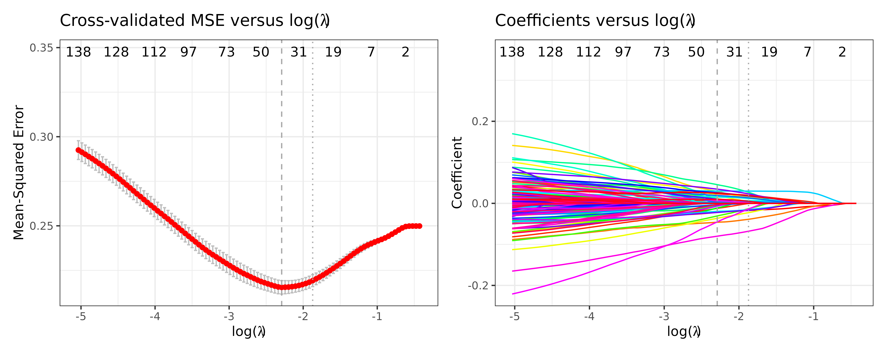
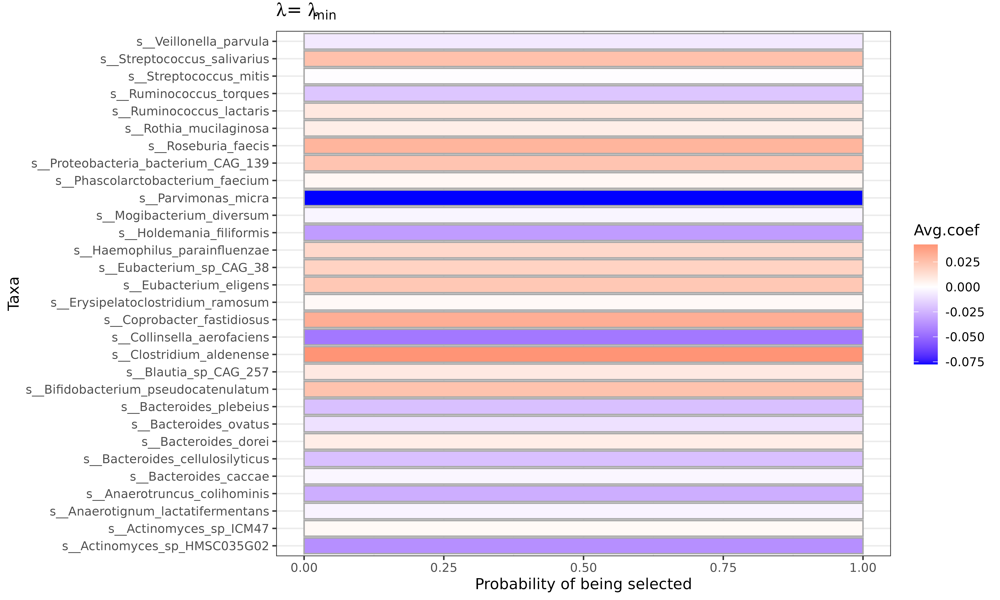
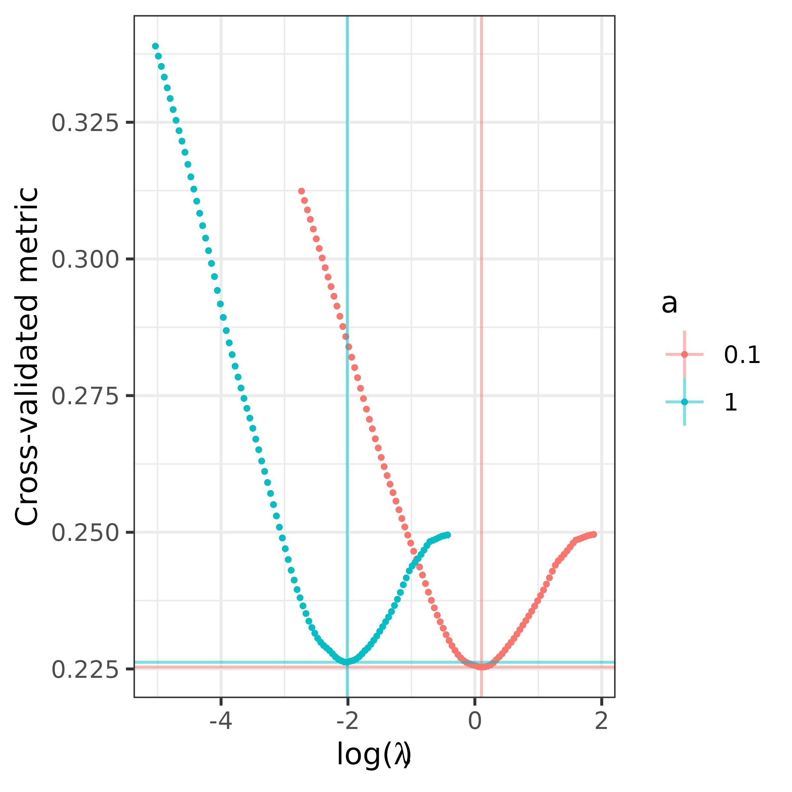

Using FLORAL for Microbiome Analysis
Source:vignettes/Using-FLORAL-for-Microbiome-Analysis.Rmd
Using-FLORAL-for-Microbiome-Analysis.RmdData
We will be using data from the curatedMetagenomicData
package. For easier installation, we saved a flat copy of the data, but
the steps below show how that was created.
if (! "BiocManager" %in% installed.packages()) install.packages("BiocManager")
if (! "curatedMetagenomicData" %in% installed.packages()) BiocManager::install("curatedMetagenomicData")
if (! "patchwork" %in% installed.packages()) install.packages("patchwork")
library(curatedMetagenomicData)
# Take a look at the summary of the studies available:
curatedMetagenomicData::sampleMetadata |> group_by(.data$study_name, .data$study_condition) |> count() |> arrange(.data$study_name)
#As an example, let us look at the `YachidaS_2019` study between healthy controls and colorectal cancer (CRC) patients.
curatedMetagenomicData::curatedMetagenomicData("YachidaS_2019")
# note -- if you are behind a firewall, see the solutions to 500 errors here:
# https://support.bioconductor.org/p/132864/
rawdata <- curatedMetagenomicData::curatedMetagenomicData("2021-03-31.YachidaS_2019.relative_abundance", dryrun = FALSE, counts = TRUE) |> mergeData()
x <- SummarizedExperiment::assays(rawdata)$relative_abundance %>% t()
y <- rawdata@colData$disease
save(list = c("x", "y"), file = file.path("inst", "extdata", "YachidaS_2019.Rdata"))
load(system.file("extdata", "YachidaS_2019.Rdata", package="FLORAL"))Running FLORAL
We extracted the data from the TreeSummarizedExperiment
object to two objects: the taxa matrix x and the “outcomes”
vector y of whether a patient is healthy or has colorectal
cancer (CRC). Note that for binary outcomes, the input vector
y needs to be formatted with entries equal to either
0 or 1. In addition, we need to specify
family = "binomial" in FLORAL to fit the
logistic regression model. To print the progress bar as the algorithm
runs, please use progress = TRUE.
x <- x[y %in% c("CRC","healthy"),]
x <- x[,colSums(x >= 100) >= nrow(x)*0.2] # filter low abundance taxa
colnames(x) <- sapply(colnames(x), function(x) strsplit(x,split="[|]")[[1]][length(strsplit(x,split="[|]")[[1]])])
y <- as.numeric(as.factor(y[y %in% c("CRC","healthy")]))-1
fit <- FLORAL(x = x, y = y, family="binomial", ncv=10, progress=TRUE)
#> Algorithm running for full dataset:
#> Algorithm running for cv dataset 1 out of 10:
#> Algorithm running for cv dataset 2 out of 10:
#> Algorithm running for cv dataset 3 out of 10:
#> Algorithm running for cv dataset 4 out of 10:
#> Algorithm running for cv dataset 5 out of 10:
#> Algorithm running for cv dataset 6 out of 10:
#> Algorithm running for cv dataset 7 out of 10:
#> Algorithm running for cv dataset 8 out of 10:
#> Algorithm running for cv dataset 9 out of 10:
#> Algorithm running for cv dataset 10 out of 10:Interpreting the Model
FLORAL, like other methods that have an optimization step, has two
“best” solutions for \(\lambda\)
available: one minimizing the mean squared error (\(\lambda_\min\)), and one maximizing the
value of \(\lambda\) withing 1 standard
error of the minimum mean squared error (\(\lambda_{\text{1se}}\)). These are referred
to as the min and 1se solutions,
respectively.
We can see the mean squared error (MSE) and the coefficients vs log(\(\lambda\)) as follows:
fit$pmse + fit$pcoef
In both plots, the vertical dashed line and dotted line represent \(\lambda_\min\) and \(\lambda_{\text{1se}}\), respectively. In the MSE plot, the bands represent plus minus one standard error of the MSE. In the coefficient plot, the colored lines represent individual taxa, where taxa with non-zero values at \(\lambda_\min\) and \(\lambda_{\text{1se}}\) are selected as predictive of the outcome.
To view specific names of the selected taxa, please see
fit$selected.feature$min or
fit$selected.feature$1se vectors. To view all coefficient
estimates, please see fit$best.beta$min or
fit$best.beta$1se. Without looking into ratios, one can
crudely interpret positive or negative association between a taxon and
the outcome by the positive or negative sign of the coefficient
estimates. However, we recommend referring to the two-step procedure
discussed below for a more rigorous interpretation based on ratios,
which is derived from the log-ratio model assumption.
head(fit$selected.feature$min)
#> [1] "s__Actinomyces_sp_HMSC035G02" "s__Actinomyces_sp_ICM47"
#> [3] "s__Anaerotignum_lactatifermentans" "s__Anaerotruncus_colihominis"
#> [5] "s__Asaccharobacter_celatus" "s__Bacteroides_caccae"
head(sort(fit$best.beta$min))
#> s__Parvimonas_micra s__Actinomyces_sp_HMSC035G02
#> -0.08514883 -0.06091512
#> s__Collinsella_aerofaciens s__Holdemania_filiformis
#> -0.04813102 -0.04267987
#> s__Anaerotruncus_colihominis s__Bacteroides_plebeius
#> -0.03821665 -0.02492675The Two-step Procedure
In the previous section, we checked the lasso estimates without
identifying specific ratios that are predictive of the outcome (CRC in
this case). By default, FLORAL performs a two-step
selection procedure to use glmnet and step
regression to further identify taxa pairs which form predictive
log-ratios. To view those pairs, use fit$step2.ratios$min
or fit$step2.ratios$1se for names of ratios and
fit$step2.ratios$min.idx or
fit$step2.ratios$1se.idx for the pairs of indices in the
original input count matrix x. Note that one taxon can
occur in multiple ratios.
head(fit$step2.ratios$`1se`)
#> [1] "s__Bacteroides_plebeius/s__Bacteroides_dorei"
#> [2] "s__Eubacterium_eligens/s__Bacteroides_cellulosilyticus"
#> [3] "s__Collinsella_aerofaciens/s__Bifidobacterium_pseudocatenulatum"
#> [4] "s__Streptococcus_salivarius/s__Actinomyces_sp_HMSC035G02"
#> [5] "s__Haemophilus_parainfluenzae/s__Actinomyces_sp_HMSC035G02"
#> [6] "s__Erysipelatoclostridium_ramosum/s__Parvimonas_micra"
fit$step2.ratios$`1se.idx`
#> [,1] [,2] [,3] [,4] [,5] [,6] [,7] [,8] [,9] [,10] [,11] [,12] [,13]
#> [1,] NA 1 4 12 22 25 26 27 27 44 73 81 114
#> [2,] NA 2 113 102 128 128 131 90 151 64 80 128 131To further interpret the positive or negative associations between
the outcome, please refer to the output step regression
tables, where the effect sizes of the ratios can be found.
While the corresponding p-values are also available, we recommend only using the p-values as a criterion to rank the strength of the association. We do not recommend directly reporting the p-values for inference, because these p-values were obtained after running the first step lasso model without rigorous post-selective inference. However, it is still valid to claim these selected log-ratios are predictive of the outcome, as demonstrated by the improved 10-fold cross-validated prediction errors.
fit$step2.tables$`1se`
#> Estimate
#> (Intercept) -1.13290845
#> s__Bacteroides_plebeius/s__Bacteroides_dorei -0.02844973
#> s__Eubacterium_eligens/s__Bacteroides_cellulosilyticus 0.03778557
#> s__Collinsella_aerofaciens/s__Bifidobacterium_pseudocatenulatum -0.04968019
#> s__Streptococcus_salivarius/s__Actinomyces_sp_HMSC035G02 0.07512405
#> s__Haemophilus_parainfluenzae/s__Actinomyces_sp_HMSC035G02 0.03696680
#> s__Erysipelatoclostridium_ramosum/s__Parvimonas_micra 0.04781375
#> s__Holdemania_filiformis/s__Eubacterium_sp_CAG_38 -0.03970198
#> s__Holdemania_filiformis/s__Proteobacteria_bacterium_CAG_139 -0.03442088
#> s__Anaerotruncus_colihominis/s__Clostridium_aldenense -0.07787635
#> s__Lachnospira_pectinoschiza/s__Ruminococcus_torques 0.03472516
#> s__Roseburia_faecis/s__Actinomyces_sp_HMSC035G02 0.04784454
#> s__Coprobacter_fastidiosus/s__Parvimonas_micra 0.06889677
#> Std. Error
#> (Intercept) 0.26269116
#> s__Bacteroides_plebeius/s__Bacteroides_dorei 0.01109385
#> s__Eubacterium_eligens/s__Bacteroides_cellulosilyticus 0.01394149
#> s__Collinsella_aerofaciens/s__Bifidobacterium_pseudocatenulatum 0.01517330
#> s__Streptococcus_salivarius/s__Actinomyces_sp_HMSC035G02 0.02810284
#> s__Haemophilus_parainfluenzae/s__Actinomyces_sp_HMSC035G02 0.02287159
#> s__Erysipelatoclostridium_ramosum/s__Parvimonas_micra 0.01975876
#> s__Holdemania_filiformis/s__Eubacterium_sp_CAG_38 0.01630423
#> s__Holdemania_filiformis/s__Proteobacteria_bacterium_CAG_139 0.01847908
#> s__Anaerotruncus_colihominis/s__Clostridium_aldenense 0.02175762
#> s__Lachnospira_pectinoschiza/s__Ruminococcus_torques 0.01312878
#> s__Roseburia_faecis/s__Actinomyces_sp_HMSC035G02 0.01770898
#> s__Coprobacter_fastidiosus/s__Parvimonas_micra 0.01828425
#> z value
#> (Intercept) -4.312701
#> s__Bacteroides_plebeius/s__Bacteroides_dorei -2.564460
#> s__Eubacterium_eligens/s__Bacteroides_cellulosilyticus 2.710297
#> s__Collinsella_aerofaciens/s__Bifidobacterium_pseudocatenulatum -3.274185
#> s__Streptococcus_salivarius/s__Actinomyces_sp_HMSC035G02 2.673183
#> s__Haemophilus_parainfluenzae/s__Actinomyces_sp_HMSC035G02 1.616276
#> s__Erysipelatoclostridium_ramosum/s__Parvimonas_micra 2.419876
#> s__Holdemania_filiformis/s__Eubacterium_sp_CAG_38 -2.435072
#> s__Holdemania_filiformis/s__Proteobacteria_bacterium_CAG_139 -1.862695
#> s__Anaerotruncus_colihominis/s__Clostridium_aldenense -3.579268
#> s__Lachnospira_pectinoschiza/s__Ruminococcus_torques 2.644964
#> s__Roseburia_faecis/s__Actinomyces_sp_HMSC035G02 2.701711
#> s__Coprobacter_fastidiosus/s__Parvimonas_micra 3.768094
#> Pr(>|z|)
#> (Intercept) 0.0000161272
#> s__Bacteroides_plebeius/s__Bacteroides_dorei 0.0103336444
#> s__Eubacterium_eligens/s__Bacteroides_cellulosilyticus 0.0067222886
#> s__Collinsella_aerofaciens/s__Bifidobacterium_pseudocatenulatum 0.0010596731
#> s__Streptococcus_salivarius/s__Actinomyces_sp_HMSC035G02 0.0075135152
#> s__Haemophilus_parainfluenzae/s__Actinomyces_sp_HMSC035G02 0.1060346352
#> s__Erysipelatoclostridium_ramosum/s__Parvimonas_micra 0.0155258098
#> s__Holdemania_filiformis/s__Eubacterium_sp_CAG_38 0.0148888266
#> s__Holdemania_filiformis/s__Proteobacteria_bacterium_CAG_139 0.0625051926
#> s__Anaerotruncus_colihominis/s__Clostridium_aldenense 0.0003445584
#> s__Lachnospira_pectinoschiza/s__Ruminococcus_torques 0.0081699524
#> s__Roseburia_faecis/s__Actinomyces_sp_HMSC035G02 0.0068983632
#> s__Coprobacter_fastidiosus/s__Parvimonas_micra 0.0001644988Generating taxa selection probabilities
It is encouraged to run k-fold cross-validation for several times to
account for the random fold splits. FLORAL provides
mcv.FLORAL functions to repeat cross-validations for
mcv times and on ncore cores. The output
summarizes taxa selection probabilities, average coefficients based on
\(\lambda_\min\) and \(\lambda_{\text{1se}}\). Interpretable plots
can be created if plot = TRUE is specified.
mcv.fit <- mcv.FLORAL(mcv=5,
ncore=1,
x = x,
y = y,
family = "binomial",
ncv = 3,
progress=TRUE)
#> Warning in mcv.FLORAL(mcv = 5, ncore = 1, x = x, y = y, family = "binomial", :
#> Using 1 core for computation.
#> Random 3-fold cross-validation: 1
#> Random 3-fold cross-validation: 2
#> Random 3-fold cross-validation: 3
#> Random 3-fold cross-validation: 4
#> Random 3-fold cross-validation: 5
mcv.fit$p_min
#Other options are also available
#mcv.fit$p_min_ratio
#mcv.fit$p_1se
#mcv.fit$p_1se_ratioElastic net
Beyond lasso model, FLORAL also supports elastic net
models by specifying the tuning parameter a between 0 and
1. Lasso penalty will be used when a=1 while ridge penalty
will be used when a=0.
The a.FLORAL function can help investigate the
prediction performance for different choices of a and
return a plot of the corresponding prediction metric trajectories
against the choice of \(\lambda\).
a.fit <- a.FLORAL(a = c(0.1,0.5,1),
ncore = 1,
x = x,
y = y,
family = "binomial",
ncv = 3,
progress=TRUE)
#> Warning in a.FLORAL(a = c(0.1, 0.5, 1), ncore = 1, x = x, y = y, family =
#> "binomial", : Using 1 core for computation.
#> Running for a = 0.1
#> Running for a = 0.5
#> Running for a = 1
a.fit